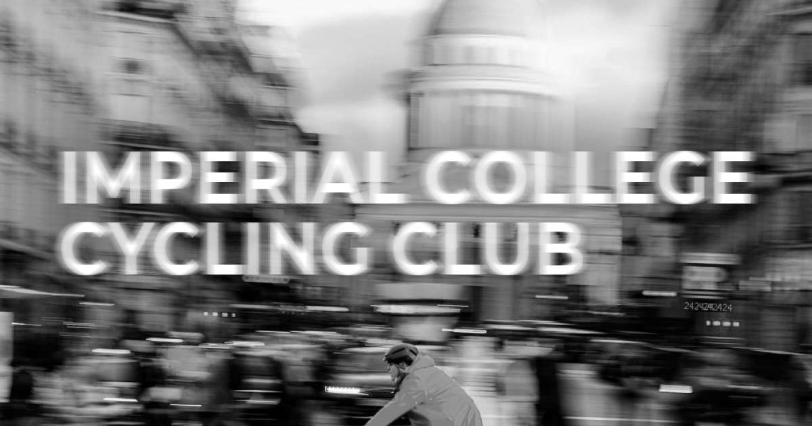

New Website and a Vision for the Cycling Club
June 9, 2025 · by Frederik Beck
The new Imperial College Cycling Club website started as a prototype — a test of how quickly a modern website could be built using templates and tools like ChatGPT. What began as a technical experiment soon turned into a real club project, as the idea sparked interest and support within the cycling community.
While initially a personal project, the website soon developed into a proper design and communication platform for the club. Beyond technical implementation, the work involved article writing, visual design, and some deeper thought about what role a club website should play — both functionally and as a reflection of club culture.
Modern cycling culture is evolving, with strong influences from design, fashion, and lifestyle. This shift has been embraced by brands like Rapha, MAAP, and Pas Normal Studios. Inspired by that, the ICCC website was designed not just to be functional but to visually align with contemporary cycling aesthetics. The goal is to help ICCC present itself as an open, modern, and active part of Imperial’s student life.
Club culture plays an important role at universities like Imperial. It helps build community, enriches student life, and offers continuity between generations of students. That’s why a strong online presence — from the website to social media — can make a real difference. It helps students discover the club, understand what it offers, and feel welcome.
Despite the new website and growing visibility, the Imperial College Cycling Club (ICCC) still faces challenges that contribute to low member numbers. The club’s vision is to make cycling more accessible, grow membership, and develop a clear strategy for the future. The website acts as a first step in this process, providing a modern platform to showcase the club's activities, values, and opportunities.
Importantly, the ICCC aims to attract not only students interested in BUCS road competitions, but also those who see cycling as a lifestyle, a balance to everyday life, or a sustainable form of city mobility. By combining a strong online presence with practical solutions for accessibility and engagement, the club hopes to connect with a wider community and strengthen its role within Imperial’s student life.
1. Communication and Appearance
The club needs a stronger identity and better communication.
• Accessible Information
We have created a new website that highlights different aspects of cycling and makes information
more accessible. It will serve as the main platform for news and club offers.
• Style and Cycling Culture
ICCC should present cycling more as a lifestyle topic, focusing on style and everyday cycling
culture. At the moment, the club has no real design, a poor logo, and very little Instagram
activity. This needs improvement.
• Club Hoodie
A new hoodie will make the club more visible on campus and strengthen identity.
• Road Kit
The current road kit is poorly designed. We want to create a new one with a modern pro team
look. If
needed, also an MTB jersey.
2. Storage and Bike Maintenance
Most students live in small rooms with very limited space. This makes storing, repairing, or cleaning a bike a real challenge. Without these possibilities, cycling is hardly possible in London.
• ICCC Bike Workshop
We want to set up a workshop where members can clean and repair their bikes. The “Bike Users
Group”
had a workshop until last year – ICCC could take it over. A bike wash with hose and drainage
should
also be included.
• Bike Storage
It would be useful to offer bike storage by securing our own space, for example a shed in a
campus
bike parking area.
• 2 Club Hardtail MTBs
The club should purchase two hardtail MTBs. These would give students the chance to try the
sport if
the high purchase price is holding them back. They would also help members who do not have
storage
space in London.
Hardtails are ideal as club bikes because they are:
- versatile (good for MTB activities and also XC training, which is closely linked to road cycling),
- robust (no fragile carbon fork),
- easy to maintain,
- simple to handle,
- cheaper than other categories of bikes.
They could, for example, be stored in the Faculty Building Bike Park. Club mountain bikes would also benefit exchange students who only stay in London for a short time and freshers who want to try cycling.
To support this, the club could create a Workshop and Materials Manager position for a dedicated student to take responsibility for the workshop and club bikes.
3. Indoor Cycling
The challenges of London life make cycling even harder: high rent, little space, far distances to nature, and academic terms from autumn to spring, which skip the main cycling season. Cycling also takes more time than, for example, a quick evening run in Hyde Park.
• Indoor Cycling Offers
We want to provide indoor cycling training so members can continue riding even in winter or with
limited time.
• Overview of Existing Indoor Bikes
Together with Imperial Athletes, we should create an overview of where modern indoor bikes are
available (e.g., Wattbikes in Ethos and Weights Club, Boat House, other gyms).
• Expanding Capacity
We should explore whether new indoor bikes can be purchased to expand capacity and where they
could
be placed.
• Prioritised Access for ICCC Members
It would be helpful to arrange reserved times or dedicated Wattbike access for ICCC members,
possibly even without a full gym membership. Alternatively, ICCC could look for a room to place
two
Wattbikes exclusively for club use.
• Existing Spinning Bikes
We need to gather information about the existing spinning bikes:
– Are they suitable for indoor cycling training?
– Do they measure power (watts)?
– Can ICCC members access them outside of official spinning classes?
4. Cross-Club Endurance Sports Offers
Currently, ICCC and the IC Triathlon Club sometimes compete with overlapping cycling offers. A partnership would make sense to strengthen both clubs.
• Club Partnership: Joint Offers with Triathlon Club
We could combine offers through cooperation: shared group rides, joint spinning sessions, and
joint
training opportunities.
• Cross-Club Endurance Sport Support
Under the umbrella of Imperial Athletes, different different offers could be made for endurance
athletes:
• Strength Training
Provide strength training introductions for endurance athletes. Strength is an important part of
cycling, and beginners should learn the correct techniques under guidance.
• Nutrition and Training Seminars
Offer seminars or online courses on nutrition and endurance training methods together with other
Imperial Athletes clubs.
• Promoting the Benefits of Strength and Endurance Training
A healthy mind lives in a healthy body. At university, physical activity is often neglected
because the focus is heavily on academics. However, the benefits of sports are immense,
improving both mental well-being and physical performance, which in turn supports academic
success.
5. Clear Safety Concept
Cycling has risks. Riders are exposed to traffic, accidents can happen, and mechanical failures are always possible. To make members feel safe, the club needs a clear safety strategy.
• Insurance
Provide information about useful insurance cover for cyclists.
• Emergency Pickup
Explore options for an emergency pickup service in case of accidents or breakdowns, to bring
rider
and bike home.
• Road Safety
Offer training and guidance on road safety for group rides and city cycling.
6. Alumni
Many people only discover cycling after their university years. Alumni can bring valuable experience to group rides and strengthen the club community.
• Alumni Engagement & Tierd Membership
Develop strategies to better involve alumni and invite them to join rides or club activities.
• Tiered Membership
Introduce a tiered membership model that includes alumni and reflects the different activity
levels
within the club.
Conclusion
The Imperial College Cycling Club has huge potential. With a clear vision, stronger communication, new equipment, indoor training, and collaborations, we can make cycling accessible to more students and grow our membership.
Our goal is simple: show that ICCC is not just about racing, but also about lifestyle, community, and the joy of cycling.

{kind=link}
{kind=link}